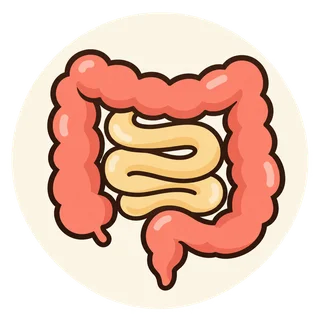

健康習慣と薬 · 第6回
便秘：食物繊維を摂れば薬はいらない？
主に成人の便秘について

確認用ページ｜医療者による公開前の確認待ちです。
まずは、ここから
この記事の3つのポイント

食物繊維は少しずつ
多いほどよい、とは限りません。体の反応を見ながら。
つらさに合う薬を選ぶ
硬さや出しにくさに合わせ、薬を組み合わせます。

受診したいサインもある
強い腹痛・嘔吐・血便は、食事や下剤だけで様子を見続けないで。
それぞれの役割を、一目で
生活習慣と薬を、組み合わせる
生活習慣でできること
排便しやすい習慣を整える
食事・水分・体の動き・トイレの習慣を、体に合う範囲で見直します。
薬による治療
便を出しやすくする
硬さや出しにくさなどに合わせて、薬やほかの治療を組み合わせます。
強い腹痛や嘔吐などがあるときは、食物繊維や下剤を追加して様子を見続けないでください。
本文で詳しく読む「野菜や食物繊維を増やせば、便秘薬を使わなくても済むのでは？」。そう思うことはありませんか。
食事や生活習慣を整えることは、便秘の改善に役立ちます。ただし、食物繊維を増やすだけで、すべての便秘が改善するわけではありません。 便の硬さ、腸の動き、出しにくさなどに合わせて、薬やほかの治療を組み合わせることも大切です。[1]
このページでは、主に成人の便秘を扱います。子どもや妊娠中の人は、薬の選び方などを医療者に確認してください。
1．便秘は、「毎日出ないこと」だけではない
便秘には、排便回数が少ないことのほか、便が硬い、強くいきまないと出ない、出し切れていない感じがする、といった困りごとも含まれます。[1,2]
毎日出ていても、つらい便秘の場合があります。 反対に、回数だけで薬が必要かどうかを決めることもできません。「何日出ていないか」に加えて、便の硬さや出すときのつらさを伝えましょう。
2．食物繊維は、少しずつ取り入れる
食物繊維は、便の量や水分、腸内の環境などに関わります。摂取が少ない人では、食事を見直すことが改善につながる場合があります。[1,3]
豆類、野菜、果物、穀類など、普段の食事に取り入れやすい食品から考えましょう。特定の食品や粉末を一度にたくさん摂るのではなく、体の反応を見ながら少しずつ増やすことが基本です。[3]
食べる量自体が少ない場合も、便が少なくなります。食物繊維だけに注目せず、食事全体を見直してみましょう。
3．増やしてもつらいときは、方法を見直す
食物繊維を増やしても改善しない、かえってガスやおなかの張りが気になる場合は、量を増やし続けず相談してください。食物繊維の種類や食事全体の内容、便秘の原因によって、合う方法は異なります。[1]
もう少し詳しく：食物繊維なら、どれも同じ？
食物繊維には、水への溶けやすさ、水を保つ性質、腸内細菌による発酵のされやすさなどの違いがあります。食品には複数の種類が含まれ、すべてが同じように働くわけではありません。[1]
2023年版ガイドラインでは、食品や食物繊維を用いた研究で改善が報告される一方、もともとの摂取量や体の状態によって効果が異なることも説明されています。発酵によってガスが増える場合もあります。
便を運ぶ働きや、肛門から出す働きに問題がある場合などは、食物繊維の増量だけでは対応できません。「水溶性なら全員に合う」「野菜を増やせば薬はいらない」とは言えません。[1]
4．水分、体の動き、トイレの習慣も一緒に
脱水を避けることや、無理のない範囲で体を動かすこと、便意を我慢しないことも大切です。朝食後など、落ち着いてトイレに行ける時間を作る工夫もあります。[2,3]
- 食事だけでなく、水分が不足していないかも見直す。
- 座りっぱなしの時間を減らし、できる範囲で体を動かす。
- 便意を感じたら、できるだけ我慢しない。
- トイレで長時間、強くいきみ続けない。
ただし、水をたくさん飲めば、必ず便秘が治るわけではありません。 心臓や腎臓の病気などで水分制限を受けている人は、その指示に従い、適切な量を確認してください。[1,3]
5．薬には、便を出しやすい状態に整える役割がある
生活習慣を整えても困りごとが続く場合は、便秘の薬を組み合わせます。薬を使うことは、食事の努力が足りないという意味ではありません。[1]
便に水分を保って軟らかくする薬、腸の分泌や動きに働く薬などがあり、症状や腎臓の働き、併用薬などに合わせて選びます。[1,4]
詳しく読む：便秘によって、治療が違うのはなぜ？
硬い便が出にくい場合と、便が軟らかくても肛門付近で出しにくい場合では、必要な対応が同じとは限りません。後者では、排便時に筋肉をうまく使えるようにする訓練などが検討されることもあります。[1,2]
また、鉄剤や一部の痛み止めなど、薬が便秘に関わる場合もあります。便秘の薬を足すだけでなく、原因となる薬や病気を確認することも大切です。必要な薬を自分で中止せず、変更できるか医師・薬剤師に相談してください。[2]
6．市販薬も含めて、使い方を確認する
便秘薬には複数の種類があり、定期的に使うものと、症状に応じて使うものがあります。刺激性の下剤を使う頻度が増えたり、同じ量で効きにくく感じたりしたときは、自分で増やし続けず、治療を見直しましょう。[1]
処方薬、市販の便秘薬、漢方薬、健康食品を、まとめて確認することが大切です。商品名が違っていても、同じような成分が重なることがあります。
例えば酸化マグネシウムは、腎臓の働きが低下している人、高齢の人、長く使っている人などでは、血液中のマグネシウムが増え過ぎることに注意が必要です。腎臓の働きが正常でも起こる場合があります。必要な検査や使い方を確認してください。[5]
酸化マグネシウムを使っていて、嘔吐、力が入りにくい、強い眠気、脈が遅いなどの症状が出た場合は、服用を中止して直ちに医療機関を受診してください。 呼吸や意識の異常がある場合は119番を優先してください。[5]
7．目標は、つらくない排便と暮らしやすさ
治療の目標は、下剤を使わないことや、毎日必ず便を出すことだけではありません。硬さや出しにくさを整え、負担の少ない排便を続けられることが大切です。[1,4]
食事や生活習慣が整った結果、医療者と相談しながら薬を調整できる場合もあります。改善したときも悪化したときも、便の状態に合わせて見直しましょう。
排便した日、便の硬さ、いきみや残便感、おなかの痛み、使った薬を簡単に記録すると、相談の助けになります。飲み方を調整する指示がある薬は、その範囲を確認して使いましょう。
8．相談したいこと、早く受診したいサイン
- 食事を変えてもつらいのですが、どんな治療が合いますか？
- 今の薬が便秘の原因になっている可能性はありますか？
- 市販薬も使っていますが、成分が重なっていませんか？
- 薬の量や回数は、どこまで調整してよいですか？
薬剤師には、「外出先でトイレに行きにくい」「張りがつらくて食物繊維を増やせない」などの困りごとも伝えてください。一緒に整理し、必要に応じて医師や管理栄養士への相談につなげます。
便秘が続く、急に排便の様子が変わった、意図せず体重が減るといった場合は、医療機関で原因を確認しましょう。血が付く場合も、少量だからと放置せず相談してください。硬い便の後の少量の鮮血は肛門の傷によることもありますが、家庭で原因を決めつけないでください。[1,2,7]
強い腹痛や著しいおなかの張り、繰り返す嘔吐、おならも出ない状態がある場合は、すぐに医療機関へ相談・受診してください。 血便に強い腹痛を伴う、出血が多い、顔色が著しく悪くぐったりしている場合も、救急受診が必要です。下剤や食物繊維を追加して様子を見続けないでください。[2,4,7]
参考文献・参照先
2026年10月22日確認。一般的な情報です。個別の食事・水分・薬の調整は、医療者と相談してください。
日本消化管学会編「便通異常症診療ガイドライン2023―慢性便秘症」（Minds掲載PDF）：便秘の評価、食事と生活習慣、症状に応じた薬・治療の選択。
米国NIDDK「便秘の症状・原因」／「治療」：出しにくさ、薬の影響、受診のサイン。
米国NIDDK「便秘と食事・栄養」：食物繊維を少しずつ増やすこと、水分量の個別化。
国立がん研究センター がん情報サービス「便秘」：心地よい排便、薬の役割、日常の工夫と受診。がん治療中の人向け資料であり、全読者に同じ量・日数の基準を当てはめてはいません。
PMDA掲載「酸化マグネシウム製剤 適正使用に関するお願い」（酸化マグネシウム製剤の電子添文例：2025年10月改訂）：高マグネシウム血症の注意と受診。適正使用資料は2015年作成。
総務省消防庁「救急車を上手に使いましょう」2025年10月：呼吸や意識の異常などの緊急対応。
NHS「Bleeding from the bottom (rectal bleeding)」：少量の出血と多量・持続する出血の緊急度。原因を自己診断せず確認すること。